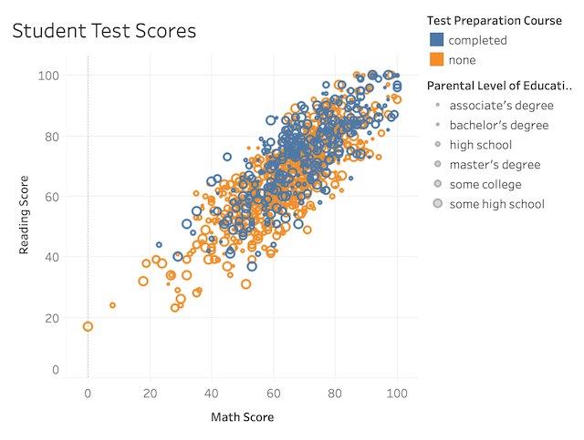

hw-03: Interactive Webpage, and Marks & Channels

Marks
- Mark 1: Area (used in Map)
- Mark 2: Line (used in the bar at the top of the image)
Channels
- Channel 1: Color Hue
- Color represents the attribute of what political party women would've voted for.
- Color representation is a good mapping here because color is one of the most effective ways of displaying information. Blue and red are opposite from each other on the color wheel, so it's easy to spot the difference between political parties.
- Channel 2: Length
- Length represents the attribute of how many votes each presidential candidate would have received in the bar at the top of the image.
- Length is a good mapping in this situation because the differences in magnitude of each attribute is so great that size easily shows the difference between how many votes each candidate would have recieved.
Colormap(s)
- Colormap 1: Political Party (Red and Blue)
- This colormap represents the attribute of what political party women would've voted for.
- In this case, the color map used is appropriate and effective because it's used to differentiate between categorical data, political parties. Since there are only two parties depicted in this picture, it's easy to distinguish which party is which due to the opposite colors, red and blue, used to colormap this attribute. The colors used also have similar saturation and value.

Marks
- Mark 1: Points
Channels
- Channel 1: Horizonal Position
- Represents exit velocity of batted balls
- Horizonal positioning is a good mapping because it allows to viewer to easily view how data points and other variables change as exit velocity changes.
- Channel 2: Vertical Position
- Represents launch angle of batted balls
- Vertical positioning is a decent mapping because it allows to viewer to easily view how data points and other variables change as launch changes. However, it would be much more intuitive for the reader to view the launch angle of batted balls in the horizonal position rather than the vertical position as it allows to reader to view the launch angle almost from a standpoint of how the ball was pitched.
- Channel 3: Color Luminance
- Represents how close to average scoring value batted balls are
- Color luminance is a good mapping choice in this case because it makes the more extreme data points pop out more.
- Channel 4: Color Hue
- Represents if batted balls are below or above average scoring value
- Color hue is a good mapping here because it doesn't just allow the viewer to identify how average or unaverage different scoring values are, it allows them to also see which side of the scoring spectrum they sit on.
Colormap(s)
- Colormap 1: Below or Above Average (Purple and Orange)
- The colormap details if batted balls are below or above average scoring value by coloring them purple or orange, respectively, and it details how close or far batted balls are from the scoring average by making them less or more saturated, respectively.
- This choice is good colormapping because it uses two colors, purple and orange, that are opposite from each other and easily distinguishable. The added variable of saturation also makes it easy for viewers to easily identify how extreme scores for different batted balls were. The value of the colors used also stays similar. All variables are kept consistent throughout the color map.

Marks
- Mark 1: Points
Channels
- Channel 1: Horizonal Position
- Represents math scores of students
- Horizonal positioning is a good mapping because math scores are quantitative values, so the viewer can easily trace what levels of attributes apply to students with higher or lower math scores.
- Channel 2: Vertical Position
- Represents reading scores of students
- Vertical positioning is a good mapping because reading scores are quantitative values, so the viewer can easily trace what levels of attributes apply to students with higher or lower reading scores. (similar to point above)
- Channel 3: Size
- Represents how much education students' parents received.
- Size is a good mapping here because it allows the viwer to see different levels of education students' parents received and the correlation that attribute may have with reading/math scores.
- Channel 4: Color Hue
- Represents if students completed a test preparation course or not.
- Color hue is a good mapping in this situation because it very easily distinguishes students who have completed a prep course from those who have not using opposing colors with similar hue and value.
Colormap(s)
- Colormap 1: Students that Have or Have Not Completed Test Preparation Courses
- Represents if students completed a test preparation course or not.
- (See above point under the channel 4 detailing for this visualization). This is a good colormapping because only two colors were used, and saturation was not changed, so the two buckets of students identified by the colormap are extremely easily differentiated and readable.